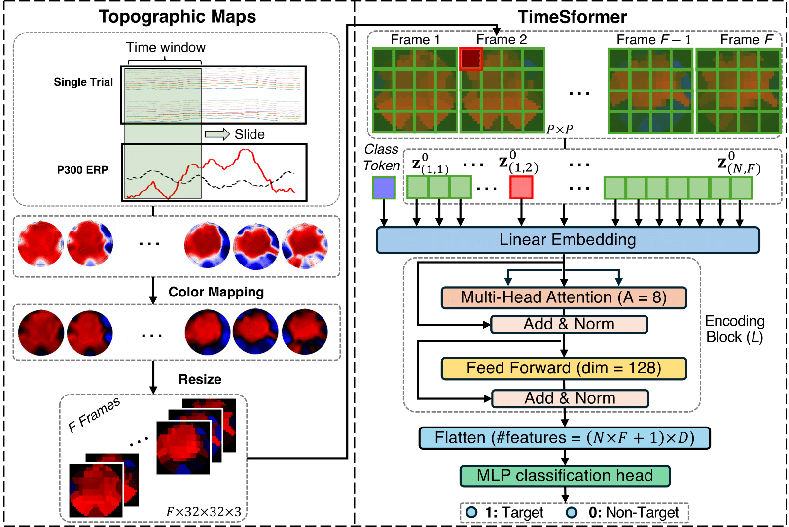

|
Jiazhen Hong | 洪嘉桢 Department of Electrical and Computer Engineering at Rutgers University in Piscataway, NJ. I am currently working at the Integrated Systems & NeuroImaging Laboratory at Rutgers University, advised by Professor Laleh Najafizadeh, and part-time at Emotiv, a global technology company specializing in the development and manufacturing of wearable EEG products. My primary research interests include time-series foundation models, electroencephalography (EEG)-based brain-computer interfaces (BCI), signal processing, and LLM-driven BCI applications. |
{kind=link}
üî• News
|
Research BackgroundIn Fall 2024, I worked as a Research Intern at Emotiv, focusing on Foundation Models and Generative AI for Brain-Computer Interface (BCI) applications. At Rutgers in 2024, I designed a P300 Speller BCI incorporating Generative AI. In 2023, I developed an LLM-based BCI mind-controlled speller system aimed at assisting individuals with disabilities in communication. In 2022, I created a channel selection method to enhance the speed and efficiency of BCIs in real-world applications. In 2020, I proposed a geometric approach to optimize the k-means algorithm, addressing issues related to local minima. Before joining Rutgers University in 2019, I conducted biostatistics research at Harvard Medical School, focusing on pancreatic cancer diagnosis. This project utilized Gene Set Enrichment Analysis (GSEA) to identify significant biological differences using protein data, including subsets of around 1300 proteins and small gene panels with as few as 5-10 genes. |
|  |
TopoEEG: a TimeSformer-Based Topographic Image Representation Method for Single-Trial Early Detection of P300
Jiazhen Hong, Laleh Najafizadeh, ISBI, 2025 IEEE International Symposium on Biomedical Imaging Link We introduce TopoEEG, an innovative image-based framework that generates sequences of topographic maps from EEG data, preserving both temporal and spatial information for decoding neural dynamics. These topographic maps are processed using TimeSformer, a state-of-the-art video classification model with joint and divided space-time attention mechanisms. |
|
ChatBCI: A P300 Speller BCI Leveraging Large Language Models for Improved Sentence Composition in Realistic Scenarios
Jiazhen Hong, Weinan Wang, Laleh Najafizadeh, IEEE Brain, 2024 IEEE Brain Discovery and Neurotechnology Workshop. arXiv We present ChatBCI, an innovative P300 speller BCI that leverages the zero-shot learning capability of large language models (LLMs) to improve the speed of sentence writing for the user. The system retrieves word suggestions to either complete partially spelled words or predict the next word in a sentence, improving efficiency when in sentence composition. |
|
|
P3T: A Transformer Model for Enhancing Character Recognition Rates in P300 Speller Systems
Jiazhen Hong, Laleh Najafizadeh, Asilomar (ACSSC), 2024 Asilomar Conference on Signals, Systems, and Computers Poster We introduce P300-Transformer (P3T), a new single-trial P300 detec- tor transfer model, designed to optimize the information transfer rate (ITR) in P300-BCI speller systems, while maintaining a high character recognition rate. |
|
|
A Geometric Approach to k-means
Jiazhen Hong, Wei Qian, Yudong Chen, Yuqian Zhang, arXiv, 2022 arXiv We propose a flexible framework for k-means problem by harnessing the geometric structure of local solutions. It provides a theoretical foundation for future work to design detection routines for varying cluster distributions. |
|

|
A deep learning framework based on dynamic channel selection for early classification of left and right hand motor imagery tasks
Jiazhen Hong, Foroogh Shamsi, Laleh Najafizadeh, EMBC, 2022 IEEE / Rutgers Research Day / Rutgers Brain Health Institute Symposium We introduce a deep learning framework that utilizes dynamic channel selection for early classification of left versus right hand motor imagery (MI) tasks. This approach reduces data dimensionality, thereby accelerating future related brain-computer interface (BCI) technologies. |
üìÑ Publications |
Accepted
- J. Hong and L. Najafizadeh, “TopoEEG: a TimeSformer-Based Topographic Image Representation Method for Early Single-Trial Detection of P300,” 22nd IEEE International Symposium on Biomedical Imaging (ISBI 2025).
- J. Hong, W. Wang and L. Najafizadeh, “ChatBCI: A Fast P300 Speller Brain-Computer Interface Incorporating Generative AI-Based Word Prediction, 2024 IEEE Brain Discovery and Neurotechnology Workshop. (Spotlight) – Machine Learning and Computer Paradigms for Brain Discovery Posters.
- J. Hong, L. Najafizadeh, “P3T: A Transformer Model for Enhancing Character Recognition Rates in P300 Speller Systems,” 58th Annual Asilomar Conference on Signals, Systems, and Computers.
- J. Hong, F. Shamsi, and L. Najafizadeh, “A Deep Learning Framework Based on Dynamic Channel Selection for Early Classification of Left and Right Hand Motor Imagery Tasks,” Proc. of 44th Annual International Conference of the IEEE Engineering in Medicine and Biology Society (EMBC’22), Glasgow, Scotland, July 2022, pp. 3550-3553.
Under Review
- J. Hong, W. Qian, Y. Chen, and Y. Zhang, “A geometric approach to k-means,” Under Review.
- J. Hong, W. Wang, and L. Najafizadeh, “ChatBCI: A P300 Speller BCI Leveraging Large Language Models for Improved Sentence Composition in Realistic Scenarios,” Under Review.
- J. Hong, P. Rao, W. Wang, S. Chen and L. Najafizadeh, “ChatBCI4ALS: A High-Performance, LLM-Driven Intent-Based BCI Communication System for Individuals with ALS,” Under Review.
- J. Hong, G. Machellar, and S. Ghane, “EEGM2: An Efficient Mamba-2-Based Self-Supervised Framework for Long-Sequence EEG Modeling,” Under Review.
In Preparation
- J. Hong, W. Wang, S. Haghani, and L. Najafizadeh, “Subject-specific Channel Selection Based on Davies-Bouldin Index for EEG Motor Imagery Classification,” in preparation.
üßë‚Äçüéì Supervised Students
|